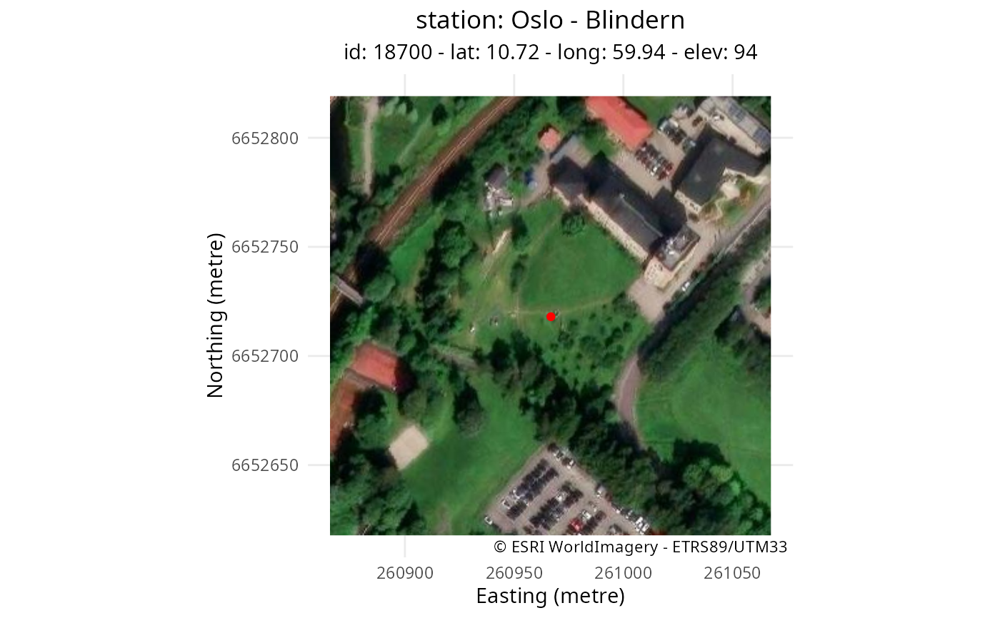
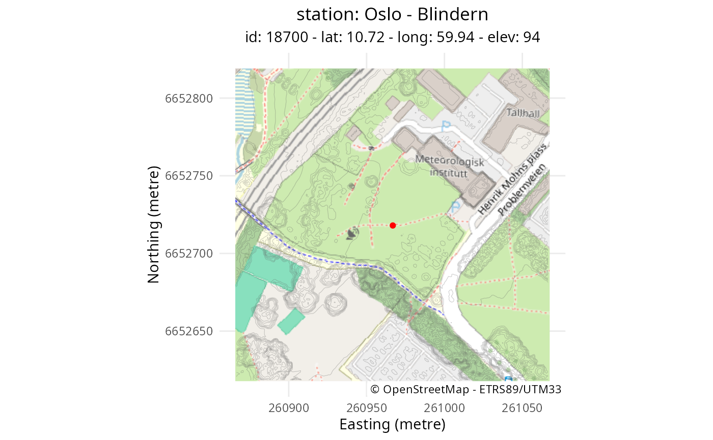
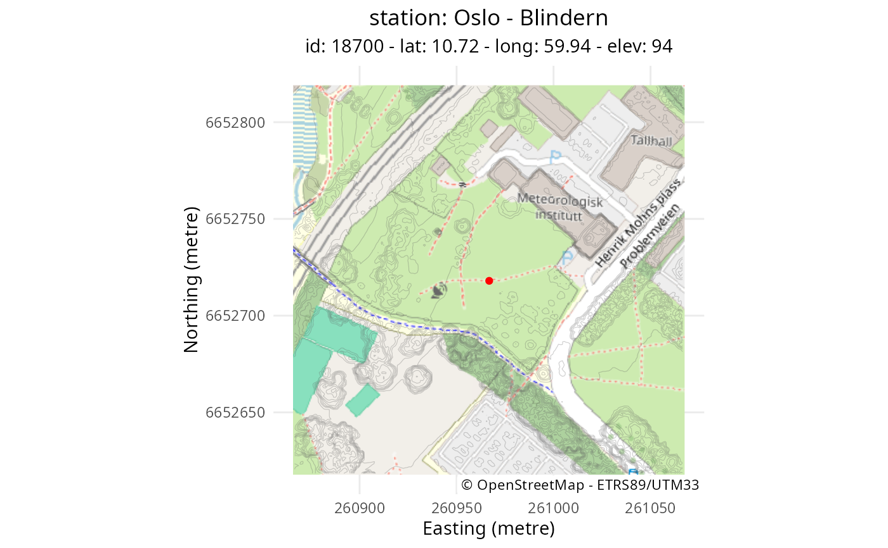

Plots publicly-available maps, atlas, land cover or satellite imagery near
a weather station based on maptiles and custom-made "get_tile_wms"
plot_tile_station(
stn = NULL,
box = NULL,
tile_name = "osm",
dsm = NULL,
path = stn$path
)Arguments
- stn
A SpatVector with station attributes from
"get_latlon_frost"- box
A SpatExtent defining the area to plot
- tile_name
A string defining the type of tile to plot among "osm" (map, default), "esri" (satellite imagery), "ar5" (area type), "clc" (Corine land cover) and "urban" (urban atlas)
- dsm
A SpatRaster of a digital surface model around the station, expected radius is 100 m
- path
A string path that defines where to save the plot, if NULL (default) the plot is printed on-screen and not saved
Value
A ggplot object
References
Examples
# Get station coordinates and name
stn <- get_metadata_frost(stationid = 18700, dx = 100, resx = 1)
#> [1] " "
#> [1] "-------------------------------------------"
#> [1] "station MET.NO: 18700 -- OSLO - BLINDERN -- Fast_IP: 10.240.10.11:6785"
#> [2] "station MET.NO: 18700 -- OSLO - BLINDERN -- Fast_IP: 10.240.10.11:6785"
#> [3] "station MET.NO: 18700 -- OSLO - BLINDERN -- WMO: 0-20000-0-01492"
#> [4] "station MET.NO: 18700 -- OSLO - BLINDERN -- WIGOS: 0-20000-0-01492"
#> [1] "-------------------------------------------"
#> [1] " "
# Construct box to extract WMS tile
box <- make_bbox(stn)
# Plot maps using plot_tile_station()
g <- plot_tile_station(stn, box, tile_name = "esri")
g

plot_tile_station(stn, box, tile_name = "esri")
 plot_tile_station(stn, box, tile_name = "ar5")
plot_tile_station(stn, box, tile_name = "clc")
plot_tile_station(stn, box, tile_name = "urban")
# Include Digital Elevation Model as contour
dsm <- download_dem_kartverket(stn, name = "dom")
#> [1] "Process: 18700 - 260966.8/6652718.0 - dom - 100/1 - path: data/dem"
#> [1] "Load existing file: data/dem/18700_dom_25833_d00100m_1.0m.tif"
plot_tile_station(stn, box, tile_name = "osm", dsm = dsm, path = "plot/map")

plot_tile_station(stn, box, tile_name = "ar5")
plot_tile_station(stn, box, tile_name = "clc")
plot_tile_station(stn, box, tile_name = "urban")
# Include Digital Elevation Model as contour
dsm <- download_dem_kartverket(stn, name = "dom")
#> [1] "Process: 18700 - 260966.8/6652718.0 - dom - 100/1 - path: data/dem"
#> [1] "Load existing file: data/dem/18700_dom_25833_d00100m_1.0m.tif"
plot_tile_station(stn, box, tile_name = "osm", dsm = dsm, path = "plot/map")
